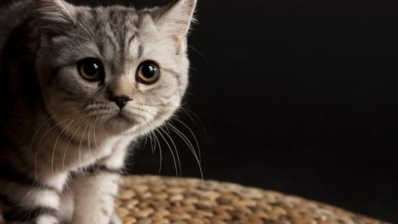

Історія породи
На сьогоднішній день порода скоттиш-страйт офіційно визнана далеко не всіма фелінологічними спільнотами, чому є
цілком логічне пояснення.
Чарівні представники цієї гілки котячих є одним з різновидів шотландської вислоухої
кішки, отриманої за допомогою схрещування її з прямовухими тваринами.
На будь-якому фото можна побачити, що будь-які суттєві відмінності між представниками двох порід відсутні
практично повністю.
Метою такого роду селекції було покращення фізичних якостей висловухих кішок, а
своєрідним
побічним продуктом даних експериментів стали скоттиш-страйти.
Як історичну батьківщину породи скоттиш-страйт, як і випливає з найменування, називається Шотландія.
Однак
першими, хто став цілеспрямовано виводити нову породу з, здавалося б, побічних результатів схрещування
шотландських висловухих і прямоухих кішок, стали австралійці.
Саме в Австралії було створено перший, визнаний офіційно, стандарт якому і зараз відповідає шотландський скоттиш-страйт. На початку 21 століття ці стандарти, як і порода, були визнані офіційно.
Психологія
На відміну від багатьох інших домашніх представників сімейства котячих, шотландські прямоухі мають спокійний і врівноважений характер.
Незважаючи на цю особливість, домашні вихованці цілком прихильні до активних ігор. Слід назвати кілька
пріоритетних характеристик характеру,
які вигідно відрізняють «шотландців» від кішок багатьох інших порід:
-
Кошенята і дорослі тварини породи скоттиш-страйт мають досить велику вагу в сукупності з невеликими розмірами,
що, як можна побачити на будь-якому фото, надає їм деяку округлість силуету.
Дана фізіологічна особливість дещо обмежує можливості вихованців - їм досить складно дертися на вертикальні поверхні, штори, стовпчики.
Певною мірою це безумовний плюс - обстановка в будинку, меблі та шпалери залишаться в безпеці навіть з появою кішечки. -
Поступливий характер, практично повна відсутність агресії, терплячість роблять «шотландців» ідеальним вихованцем
для сімей, де є діти.
У цьому страйті схожі з британцями та піксі-бобами . Однак, не слід забувати про те, що кішка в першу чергу - жива істота, а не м'яка іграшка. -
Будь-якого представника породи скоттиш-страйт, незалежно від статевої приналежності, відрізняє ніжна
прихильність і відданість господареві.
Ці кішки добродушні та ласкаві, але нетерпимі до прояву зайвої турботи та примусу.
Вони не нав'язуватимуться на прояв уваги з боку домочадців, але із задоволенням приймуть ненав'язливу ласку. -
Шотландський скоттиш-страйт вигідно відрізняється від інших домашніх кішок гострим розумом та проникливістю.
Тварина ніколи не порушуватиме заведений порядок, і дотримуватиметься встановлених господарів правил. -
Проте певною мірою інтелектуальність кішок може відіграти і негативну роль.
Як кошенята, так і доросла кішка цілком можуть застосувати свої розумові якості для відкриття закритих шаф, клітин з гризунами або птахами. Словом, пробратися туди, куди не слід йти.
В цілому ж характер шотландського скоттиш-страйту відрізняється добродушністю, м'якістю, а також яскраво вираженою самостійністю і незалежністю.
Застосування
Прямоуха кішка породи шотландський скоттиш-страйт - практично ідеальна як домашній вихованець.
Ось найбільш
визначні ознаки, які вигідно відрізняють цих тварин від інших представників сімейства котячих:
-
Універсальний характер. Домашній вихованець може виявляти однаково як нестримну активність, і непорушний спокій.
Така тварина підійде як сім'ям з дітьми, що люблять активні ігри, так і людям, які воліють проводити час у тиші та спокої. -
Різноманітні забарвлення. Для котів цієї породи характерна цікава особливість: відтінок очей, як правило,
відповідає кольору вовни.
Забарвлення ж різноманітні: сірий, білий, чорний, рудий, біколор, триколор та багато інших. -
З появою в сім'ї, скоттиш-страйт виділяє як господар одного з членів сім'ї, до якого належить найбільш
позитивно.
Однак і до інших домочадців він виявляє виняткову прихильність.
Як вибрати кошеня
Забирати маленьких скоттиш-страйтів від матері слід у віці приблизно трьох місяців.
Саме в цей період
кошенята стають самостійнішими, не потребують материнського молока і турботи.
Необхідно запам'ятати, що
годувати тварину безпосередньо після відлучення від матері слід їжею, до якої він звик у сім'ї попереднього
власника.
При виборі найбільш відповідного кошеня, слід звернути увагу не тільки на зовнішній вигляд звіра, але і на
особливості його характеру.
Палохливі котята, які прагнуть втекти в укриття при будь-якому гучному звуку,
навряд чи стануть повноцінними дорослими особинами, зберігши негативні якості характеру, отримані в ранньому
дитинстві.
Однак, якщо врахувати відмінну навченість і благодушність цих тварин, можна розраховувати на те, що ласка і
турбота дозволять купірувати негативні риси.
Ціна тварини прямо пропорційна наявності або відсутності
необхідної документації, що підтверджує походження кошеня.
Вартість кішки, придбаної з рук, без ветеринарного
паспорта, не перевищує, як правило, пари тисяч рублів.
Ціна ж тварини, що продається в сукупності з
документами, що додаються, цілком може перевищити зазначений вище показник у десять разів.
Особливості догляду
Порода британський скоттиш-страйт порівняно невибаглива. Кошенята, як і доросла прямоуха кішка, не вимагають
надмірної турботи та догляду.
Для повноцінного здоров'я вихованця слід приділяти увагу лише деяким нюансам:
- Слід регулярно очищати вушка тварини за допомогою ватних дисків або паличок, змочених у воді.
- Щоб уникнути утворення на вушках характерних скоринок, допустимо змащувати оголені ділянки звичайним дитячим кремом.
- Слід періодично купати кішку, особливо у літній період. Як правило, шотландський скоттіш-страйт цілком спокійно ставиться до цієї процедури, на відміну від багатьох інших представників сімейства котячих.
- Необхідно регулярно підстригати вихованцю пазурі. За відсутності необхідних навичок, вперше виконання цієї процедури слід довірити професійному майстру.
Розчісування
Представників породи скоттиш-страйт вигідно відрізняє не тільки м'який і добродушний характер, а й зворушлива зовнішність, що видно на будь-якому фото.
Щільна і пухнаста шерсть тварини потребує регулярного догляду. В іншому випадку не виключена поява ковтунів - грудок сплутаних шерстинок, позбутися яких можна тільки за допомогою ножиць.
Систематично слід розчісувати домашнього вихованця за допомогою спеціальних щіток, призначених для кішок.
Робити це необхідно не менше одного разу на тиждень, а в періоди сезонного линяння варто використовувати
фурмінатор для котів.
Відсутність даної процедури призведе до того, що тварина заковтуватиме при вилизуванні
вовну, що загрожує погіршенням
травлення і самопочуття звірка в цілому. Стрижка скоттиш-страйтів не
проводиться.
При купанні необхідно використовувати засоби, що запобігають сплутуванню вовни та появі бліх. Шампуні слід витрачати економічно, за надмірної освіти піни, змити її буде досить складно.
Вигул
- Шотландський скоттиш-страйт - тварина виключно домашня, яка не потребує регулярних прогулянок. Проте, як кошеня, так і дорослий вихованець, буде дуже радий пограти на свіжому повітрі.
- Проте слід стежити за тим, щоб кіт не контактував з тваринами, які можуть бути потенційними носіями різних інфекцій.
- Якщо тварина здійснює регулярні прогулянки на вулицю, необхідно систематично, не рідше ніж раз на квартал, здійснювати процедури щодо профілактики появи різних кишкових паразитів. Найчастіше для досягнення цієї мети використовуються різні пігулки від глистів.
Харчування
Для того, щоб кішка чудово почувалася, необхідно збагатити її раціон кальцієм
Для повноцінного існування, бездоганного зовнішнього вигляду та відмінного здоров'я, британський прямоухий кіт
потребує збалансованого харчування.
Допустимо годування вихованця сухими кормами , але їх необхідно
поєднувати з
натуральною, свіжоприготовленою їжею.
Як найбільш поширені захворювання, що часто вражають «шотландців», називаються різні недуги, викликані відсутністю в раціоні необхідної кількості кальцію. Щоб уникнути розвитку множинних патологій, необхідно приділити зазначеному аспекту особливу увагу: у щоденному меню вихованця повинні бути продукти, багаті кальцієм.
-
Як основні страви, які слід пропонувати домашній тварині, необхідно назвати наступні:
-
варені, або тушковані овочі;
-
пройшли термічну обробку риба та м'ясо;
- кисломолочну продукцію;
- незбиране молоко;
-
пройшли термічну обробку риба та м'ясо;
- овочеві супи на м'ясний бульйон.
-
варені, або тушковані овочі;
- Також необхідно збагачувати раціон тварини мінеральними та вітамінними комплексами.
Здоров'я
Кішки схильні до ожиріння
Шотландський скоттиш-страйт має досить міцне
здоров'я, і практично не потребує проведення різних профілактичних процедур, спрямованих на запобігання всіляким
недугам.
Регулярне та повноцінне годування, догляд за вовною, кігтями та вухами – зазначених заходів цілком
достатньо для повноцінного життя кота.
Характерні захворювання
Існує кілька захворювань, ризик розвитку яких у шотландської кішки є насамперед. Як найбільш поширені називаються такі:
- Схильність до появи захворювань суглобів та кісток.
Зазвичай такі недуги вражають тварин, які не отримують у необхідній кількості кальцій.
Слід передбачити раціон харчування вихованця для запобігання можливим хворобам. -
Як одна з фізіологічних особливостей страйтів називається схильність до набору зайвої маси тіла.
В ідеалі, тварина має бути щільною, але не вгодованою.
Саме у зв'язку із зазначеним аспектом слід обмежити кількість вживаних тваринних жирів у раціоні домашнього вихованця, особливо якщо є передумови до ожиріння.
Щеплення

Кішкам породи скоттиш-страйт необхідно проводити регулярну вакцинацію навіть у тому випадку, якщо вони проживають
виключно в домашніх умовах.
Це зумовлено тим, що тварини потребують профілактики імунітету, а також
підвищення
здатності організму протистояти різним вірусним захворюванням.
Перші щеплення кошенятам ставляться у віці трьох місяців, безпосередньо після відлучення від матері.
Саме в
цьому
віці тварини найбільш схильні до ризику розвитку різних недуг.
Пояснюється це так: разом з материнським молоком кошеня отримує речовини, що сприяють захисту організму.
У
разі їх
відсутності, тварина піддається ризику зараження різними інфекціями.
Далі вакцинація проводиться щорічно. Але зазначена процедура має збігатися з періодом, коли проводиться обов'язкова профілактика появи кишкових паразитів.
Потомство
Скоттіш-страйт самостійні та незалежні
В'язати тварину можна як з представниками породи скоттиш-страйт, так і
з висловухими кішками, що для останніх необхідно для повноцінного потомства.
Стателозрілості тварина досягає
у віці приблизно півтора-одного року.
Однак, цей вік не є придатним для першої в'язки, оскільки отримане
потомство може бути ослабленим. Найкраще вперше в'язати кішку у віці приблизно двох років, тоді організм тварини
повністю готовий до вагітності .